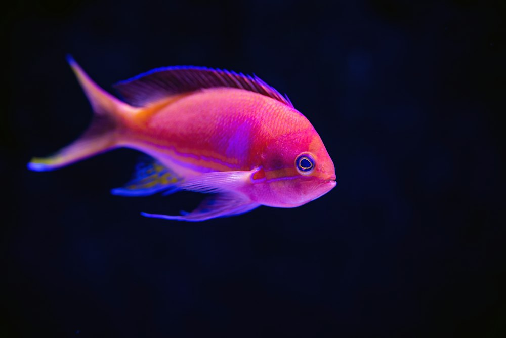

Optimal FCR
Optimal FCR
Feed & Nutrition
High-protein extruded floating pellets enriched with amino acids and minerals for faster weight gain and clean water.
Explore Feeds ↗Purposeful supplies, biological water intelligence, and hands-on engineering support for fish farms, modern hatcheries, and commercial aquatic growers.
Engineered to support each critical phase of the fish farming cycle — from pond preparation to final harvest grading.
Optimal FCR
High-protein extruded floating pellets enriched with amino acids and minerals for faster weight gain and clean water.
Explore Feeds ↗ Oxygen Transfer
Oxygen Transfer
Commercial paddlewheels, submerged aspirators, and digital dissolved oxygen meters preventing fish stress.
Explore Aerators ↗ Continuous Duty
Continuous Duty
Submersible axial pumps, knotless seining nets, incubation racks, and solar auto-feeders built to last.
Explore Equipment ↗We supply tailored infrastructure for open ponds, biofloc tanks, marine net cages, and closed-loop recirculation.

Biosecure bead filters, UV reactors, and drum screen equipment ensuring 90%+ water recycling.
Specialized carbon sources, microbial inoculants, and root blower aeration maintaining biofloc suspension.

HDPE floating collars, anti-fouling cage nets, and mooring systems tested in high-current waters.

Constant-temperature flow trays, micro-particulate feeds, and aeration diffusers protecting fragile fry.

Aquaculture is a delicate balance of biology, equipment reliability, weather, and market timing. Our team works alongside farm owners and technicians to eliminate operational downtime and maximize feed efficiency.
By standardizing your farm routines, you protect fingerling survival and achieve consistent weight grading across each pond cycle.
Soil drying, agricultural liming, and beneficial microbial blooms before stocking.
Gradual temperature and pH equalization ensuring zero osmotic shock to fingerlings.
Timed nutrition adjustments based on real-time morning dissolved oxygen measurements.

Actionable insights from our team of aquaculture engineers and pathologists.

Morning dissolved oxygen dips are the #1 cause of slow fish feeding. Aerate during early dawn hours.
Read water care guide →
Consistent feeding schedules and weekly water quality logging make early disease detection straightforward.
Learn routine setup →
Overfeeding pollutes pond bottoms. Use feed check trays and adjust pellet size to growth stages.
Calculate your FCR →Reach out today for equipment sizing recommendations and tailored feed schedules.